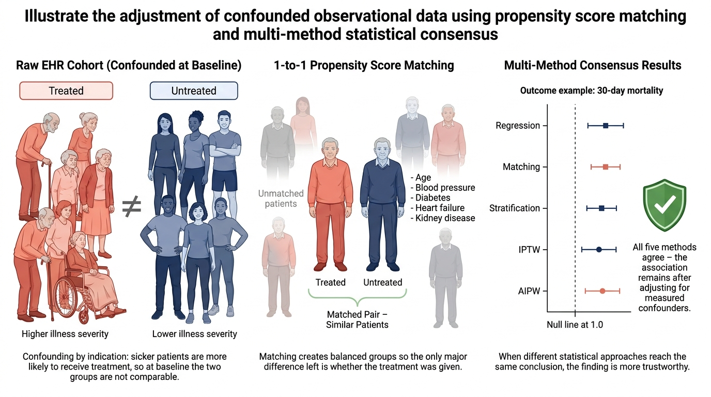
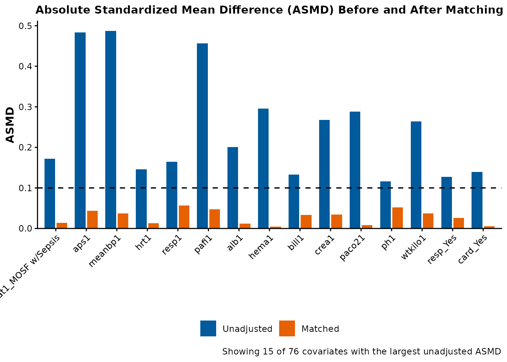
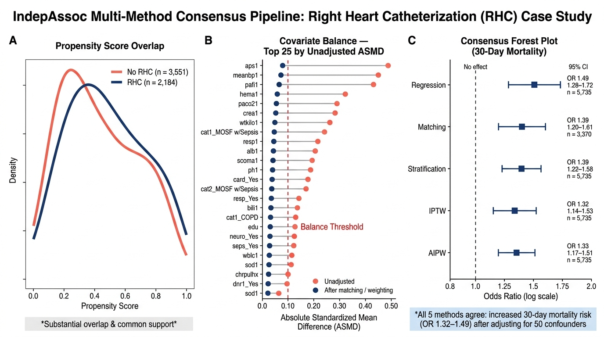

Five Ways to Check a Finding: A Walkthrough for Clinicians
clinician-walkthrough.RmdWho this is for
You do not need a statistics background to follow this walkthrough. If you can read a lab report, you can read this. We will use one real, well-known clinical question — does right heart catheterization (RHC) increase the risk of dying within 30 days? — and walk through exactly how IndepAssoc checks whether that finding is real, using data from 5,735 critically ill patients.
If you want the full technical version of this same analysis, with every statistical detail, see the RHC case study vignette. This page is the plain-language companion to it.
The problem: sicker patients are more likely to get the procedure
Right heart catheterization is used more often in patients who are already more critically ill. That creates a trap: if you simply compare the death rate in patients who got RHC to patients who didn’t, sicker patients are overrepresented in the RHC group before the procedure even happens. Any difference you see could just be “RHC patients were sicker to begin with,” not “RHC caused harm.”
This is called confounding by indication, and it is the single biggest threat to trusting any finding from real-world clinical data.

The rest of this walkthrough shows exactly how IndepAssoc solves this problem — step by step, on the real RHC data.
Step 1 — Load the data
library(IndepAssoc)
# rhc_sample bundles the classic RHC cohort:
# - rhc_sample$data: 5,735 ICU patients
# - rhc_sample$covariates: the confounders to adjust for (severity of
# illness, comorbidities, demographics, etc.)
#
# The exposure column is `swang1` (received RHC or not).
# The outcome column we'll use is `dth30` (died within 30 days).
dim(rhc_sample$data)
#> [1] 5735 63
length(rhc_sample$covariates)
#> [1] 50Step 2 — Build a propensity score
A propensity score is just one number per patient: given everything we know about this patient before the procedure, how likely were they to receive RHC? Two patients with similar propensity scores looked similarly “RHC-likely” going in, even if one happened to get the procedure and the other didn’t.
ps <- build_ps_model(rhc_sample$data, "swang1", rhc_sample$covariates)Before trusting anything downstream, we need to check that treated and untreated patients actually overlap on this score — if RHC patients and non-RHC patients occupy completely different ranges of risk, no adjustment method can fairly compare them. This is called checking positivity.
positivity <- check_positivity(ps)
positivity
#> Propensity-score positivity check
#> ================================
#> Support window: 0.01 to 0.99
#> exposure 0 (n=3551): PS [0.003, 0.955], median 0.236
#> exposure 1 (n=2184): PS [0.019, 0.985], median 0.555
#> Positivity: VIOLATED (12 outside window)
#> IPTW weights (ATE): min 0.39, median 0.78, max 20.18, max/min ratio 52.2In this cohort, only a small number of patients (12 out of 5,735) fall outside the expected range — a minor, expected amount of imperfect overlap in a dataset this size, not a reason to distrust the analysis. IndepAssoc flags this automatically so it’s never silently ignored.
Step 3 — Match each treated patient to a similar untreated patient
Now we pair up patients: each RHC patient is matched to a non-RHC patient who looked statistically similar beforehand (similar age, illness severity, comorbidities, and so on).
matched <- match_cohort(ps, seed = 1)Step 4 — Confirm the matching actually worked
Matching should make the two groups look alike on everything except the treatment itself. We don’t just assume that happened — we check it.
balance <- check_balance(matched)
plot_asmd_balance(balance, top_n = 15)
Each dot shows how different the two groups are on one factor. Dots close to zero mean the groups are well balanced on that factor after matching. This is the same idea as comparing two arms of a clinical trial at baseline — except here, matching (rather than randomization) is doing the balancing.
Step 5 — Don’t trust just one method. Check it five ways.
This is the core idea behind IndepAssoc. Instead of picking one statistical approach and hoping it’s the right one, we run the same question through five methods that each rely on different assumptions:
- Regression — builds a model of the outcome that includes RHC and the other patient factors at once, then reports RHC’s association with death after holding those other factors fixed.
- Matching — the pairing approach from Step 3: compare outcomes within each matched pair.
- Stratification — groups patients with similar propensity scores into bands, compares RHC vs. no-RHC within each band, then pools the results.
- IPTW (inverse probability of treatment weighting) — reweights patients so the RHC and non-RHC groups look alike on the confounders, then compares the reweighted groups.
- AIPW (augmented IPTW) — combines IPTW’s reweighting with a regression model, so the estimate stays reliable even if one of the two underlying models is imperfect — not just one or the other alone.
If all five approaches — built on different assumptions, prone to different weaknesses — point the same direction, that is much stronger evidence than any single method alone.
results <- run_pipeline(
rhc_sample$data, "swang1", rhc_sample$covariates, "dth30",
type = "binary",
methods = c("regression", "matching", "stratification", "iptw", "aipw"),
seed = 1
)
#> Step 1/9: Building propensity score model...
#> Positivity: PS window [0.010, 0.990]; control [0.003, 0.955], treated [0.019, 0.985]; 12 outside window -> VIOLATED
#> Step 2/9: Matching cohorts...
#> Step 3/9: Checking balance...
#> Step 4/9: Generating unmatched descriptive table...
#> The following warnings were returned during `add_p()`:
#> ! For variable `cat1` (`swang1`) and "statistic", "p.value", and "parameter"
#> statistics: Chi-squared approximation may be incorrect
#> ! For variable `cat2` (`swang1`) and "statistic", "p.value", and "parameter"
#> statistics: Chi-squared approximation may be incorrect
#> ! For variable `ortho` (`swang1`) and "statistic", "p.value", and "parameter"
#> statistics: Chi-squared approximation may be incorrect
#> Step 5/9: Generating matched descriptive table...
#>
#> Step 6/9: Fitting all outcome models (3 types)...
#>
#> Step 7/9: Running paired statistical tests...
#>
#> Step 8/9: Generating balance table...
#>
#> Step 9/9: Running requested confounding-adjustment methods...
#>
#> IPTW weights (ATE): min 0.39, median 0.78, max 20.18, max/min ratio 52.2
#>
#> Pipeline complete.
format_comparison(results$comparison)
#> Method OR 95% CI p-value n
#> 1 Regression 1.49 1.28–1.72 <0.001 5735
#> 2 Matching 1.39 1.20–1.61 <0.001 3370
#> 3 Stratification 1.39 1.22–1.58 <0.001 5735
#> 4 IPTW 1.32 1.14–1.53 <0.001 5735
#> 5 AIPW 1.33 1.17–1.51 <0.001 5735Step 6 — The verdict

All five methods — despite resting on different statistical assumptions — agree: RHC is associated with a roughly 30-50% higher odds of dying within 30 days, and no method’s confidence interval crosses the “no effect” line. That agreement, across five genuinely different approaches, is what makes this a robust finding rather than an artifact of one particular modeling choice.
What this does — and does not — prove
This is an association, not proof of causation. IndepAssoc adjusts for every confounder that was measured in this dataset. It cannot adjust for factors that were never recorded. This is the standard no-unmeasured-confounding assumption behind every method shown here — if some unmeasured factor made sicker patients both more likely to receive RHC and more likely to die, no amount of statistical adjustment can fully remove that.
It is also worth knowing that the five methods above don’t all target the exact same underlying quantity — matching estimates the effect among patients who actually received RHC, while IPTW and AIPW estimate the effect across the whole cohort, for example. These are closely related but not literally identical questions. See the full RHC vignette for the precise breakdown.
What you can say, honestly and defensibly, is this: across five independent modeling approaches, the association between RHC and increased 30-day mortality held up. That is exactly the kind of robustness check a single p-value from a single model can never give you.
Try it on your own data
The same five steps shown here — build a propensity score, check overlap, match, check balance, compare five methods — work on any binary exposure and any outcome. See the quick-start guide to run this on your own cohort.